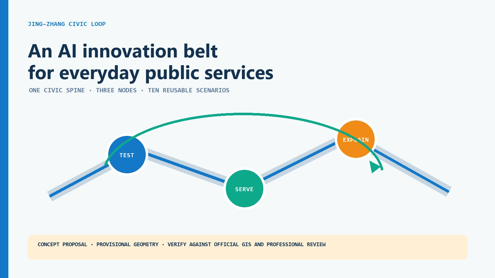
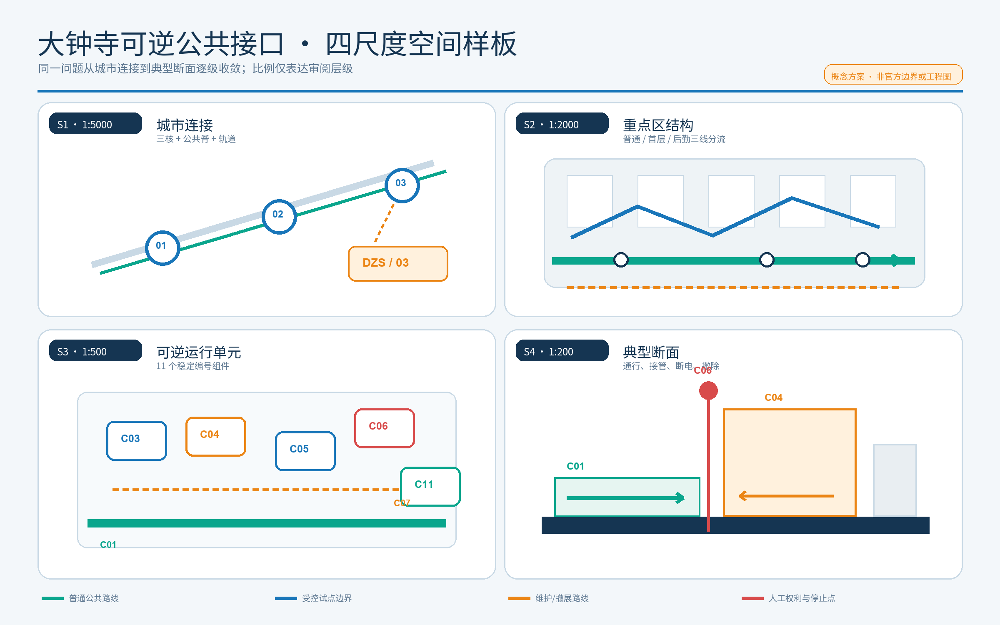
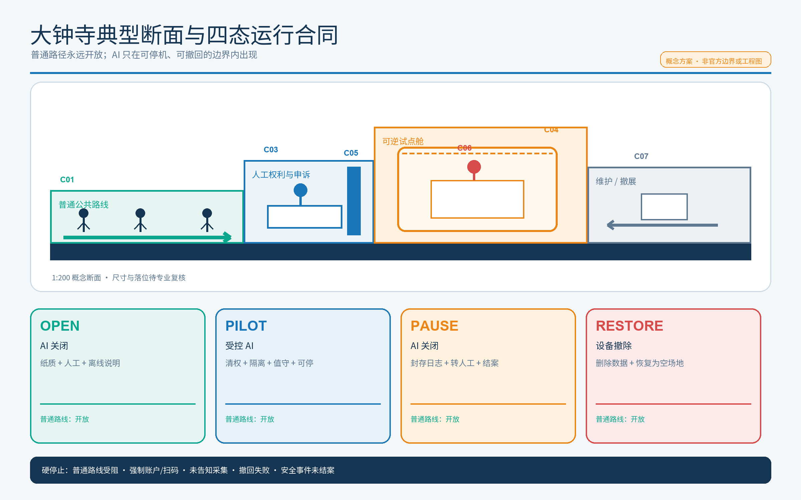
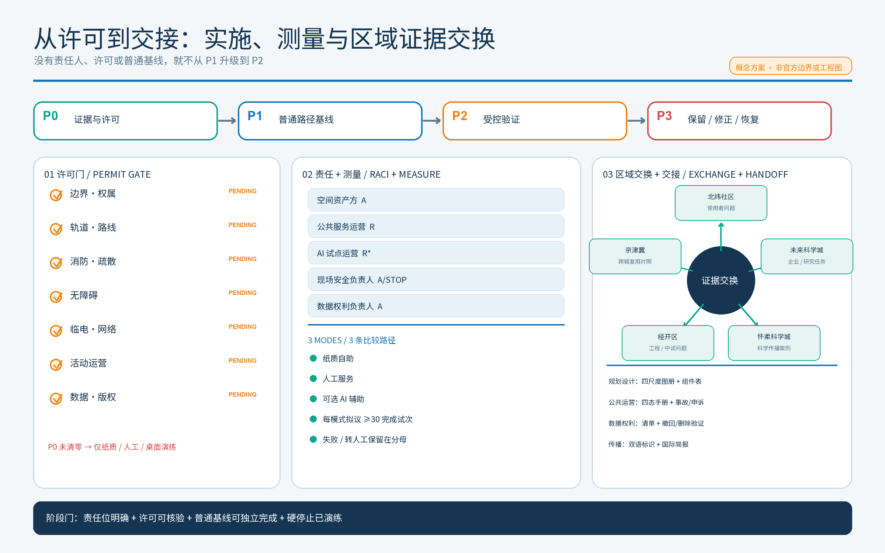

专业设计包 · 双语契约 V1 · v0.1.4
京张共生回路

AI 可以退出，公共服务不能退出
一条面向日常公共服务的 AI 创新带；本轮用大钟寺可逆公共接口把概念推进到空间、运行、测量和交接。
三类证据状态
可核验事实
只来自登记来源或可复算包内数据。
设计响应
可试、可停、可撤、可交接的概念建议。
待确认
官方 GIS、权属、消防、无障碍、许可与责任主体。
三层范围与三核

旗舰样板：大钟寺可逆公共接口
城市连接
三核、公共脊、轨道。
重点区结构
普通、首层、后勤分流。
运行单元
11 个稳定编号组件。
典型断面
通行、接管、断电、撤除。

四态运行合同
AI 关闭
纸质、人工、离线说明先建立普通基线。
受控 AI
清权、隔离、值守、可停机。
AI 关闭
封存日志、转人工、处理申诉。
设备撤除
删除数据、恢复为空场地。

许可、责任、测量与交接
7 项许可依赖
边界权属、轨道路线、消防疏散、无障碍、临电网络、活动运营、数据版权全部 pending。
5 条 RACI
资产、公共运营、AI 试点、安全、数据权利分责；安全负责人拥有停止权。
3 条比较路径
纸质自助、人工服务、可选 AI；失败与转人工不从分母删除。

三处重点区的差异化试点
众智园 · T2
基线：人工测试与离线说明。
停止：越权或恢复失败即断开。
AI 原点社区 · T1
基线：纸质导视、人工柜台、无账户入口。
停止：任一群体受阻即转人工。
大钟寺 · T3
基线：人工清权与现场说明。
停止：撤回失败或审计断链即撤展。

空间、场景与长期运营
空间系统
保留优先、可逆改造；连续慢行和蓝绿公共空间优先于智能设施。权属、文保、消防和法定条件核验后再深化。
长期运行
问题季、开源季、城市 Beta 季、Proof Week；普通日、静音时段和故障状态同样被设计。

任务覆盖与审阅索引
本页可见入口覆盖：
各入口均可回到提案章节、结构化数据、图件或专业矩阵；索引不替代证据本身。
指标、风险与提交状态
来源与假设
sources.json · assumptions.json · risk.json · spatial.json · visual/assets/dazhongsi-operations.json · metrics.json · compliance_matrix.json
自检状态
目标：DETERMINISTIC · SPATIAL · VISUAL · PROFESSIONAL
本地复核不等于官方 CI、专业批准或实施许可。